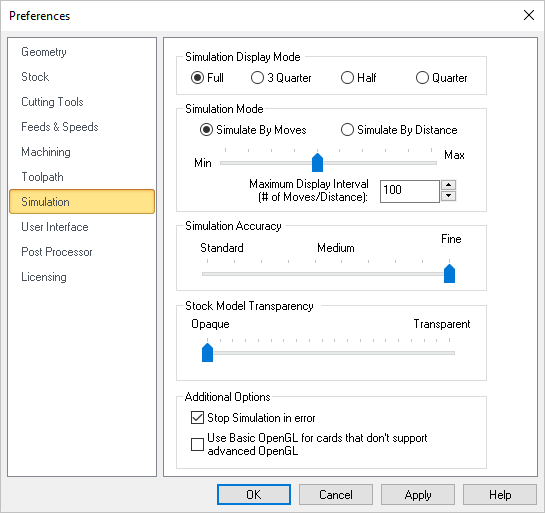
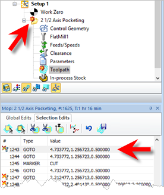
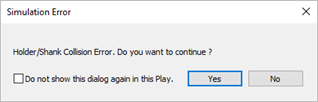

Users can set the simulation preferences using this dialog.
 Dialog Box: Set Simulation Preferences |
This parameter allows you to display the model in either Full, 3 Quarter, Half and Quarter. Simulations hidden inside the stock (Internal Boring, Drilling etc.), can be visualized better using the 3 Quarter or Half View.
|
User can set the simulation mode to Distance or by Motion. Simulate by Motion simulates the toolpath based on the number of go to motions in the generated toolpath. Simulate by Distance uses a distance based approach. |
User can control the speed of the simulation using the slider bar and the Maximum display interval. When using Simulate by distance mode, the speed is determined as # of Motions / Distance. |
This setting is used to control the accuracy of display of the simulated model. You can control the accuracy of the stock model by selecting from Standard, Medium or Fine. The finer the stock model accuracy results in slower performance and increases the simulation time. |
User can control the stock model transparency under standard mode and under simulation mode. |
This section allows you to control the Stock Edges Display states. For example, you can check the boxes to display Silhouette Edges and Sharp Edges as well as the Angle to display for stock edges. Silhouette Edges and Sharp Edge colors are set using the Colors section of this dialog. Experimentation is advised until you are comfortable with the way your stock display. |
User can turn on /off the display of tool holder during simulation. |
The cutting tool can be displayed either as a sold, Transparent, wireframe or can be turned off during simulation. |
Use Basic OpenGL Check this box only if you have an older graphics card adapter that does not support advanced OpenGL (i.e., OpenGL 2). Some older cards may only support OpenGL 1 for example. If you experience graphics instability checking this box may help resolve the issue. Stop Simulation in Error Check this box to pause the Simulation at each error flag. If enabled, a message will display asking if you wish to continue with the simulation. Selecting Play will simulate to the next error flag and then pause. etc.  Stop Simulation at Error Flag  Stop Simulation at Error Flag message |